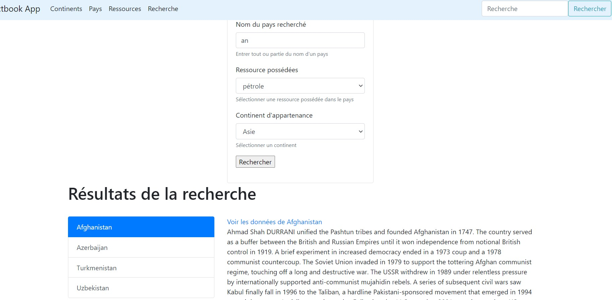

Jusqu'à présent, le site Web obtenu n'est que peu interactif et reste statique; il ne fait qu'afficher des données. Une des fonctionnalités attendues pour ce type de site peut être la recherche dans les données, ou bien la création ou la modification de ces dernières. Pour ce faire, c'est le formulaire qui sera entre l'utilisateur et la base de données, il permettra de formaliser les actions à effectuer sur les données.
Les formulaires HTML ont été vus en cours HTML; quant aux méthodes HTTP GET et POST qui nous sera utile de distinguer à partir de maintenant, se référer à la Séance 1.
Pour commencer, nous allons ajouter une barre de recherche dans la barre de navigation du site. Cette recherche s'effectuera sur plusieurs champs de la base de données:
country.namecountry.Introductioncountry.typecountry et mapcountry et resourcesDe même que SQLAlchemy est une librairie utilisée dans Flask-SQLAlchemy pour interagir avec une base de données, il existe une librairie Flask-WTF utilisant WTForms pour la gestion des formulaires. Cette librairie facilitera le développement en:
D'abord, il faut installer Flask-WTF:
pip install flask-wtf
Les classes représentant nos formulaires sont finalement des modèles au même titre que celles de la base de données. C'est pour cela que l'on peut les ranger dans app/models/ dans un fichier formulaires.py. Ces modèles détermineront quelles données nos formulaires vont capturer, de même que les logiques de validation de ces dernières.
Comme pour toute extension, Flask-WTF nécessite une petite configuration initiale avec 2 variables d'environnement supplémentaires:
WTF_CSRF_ENABLE: par défaut à True; si elle est activée, cette option permet de se prémunir contre l'attaque "Cross-site request forgery". Sauf exception, cette option doit être toujours activée pour assurer la sécurité des échanges entre le client et le serveur, et la sécurité du site.SECRET_KEY n'est demandé que si l'option précédente est activée; cette clé créé un jeton cryptographique qui servira à valider les formulairesAvant d'utiliser pleinement Flask-WTF, créons d'abord un formulaire simple en pur HTML:
<!-- templates/partials/formulaires/recherche_rapide.html-->
<form class="form-inline" action="{{url_for('recherche_rapide')}}">
<input class="form-control" type="search" name="chaine"
placeholder="Recherche" aria-label="Recherche">
<button class="btn btn-outline-info" type="submit">Rechercher</button>
</form>
Commentaires:
conteneur.html. Il a l'avantage d'être également insérable n'importe où dans le site.recherche_rapideA présent, il faut développer la fonction de rendu recherche_rapide dans les routes:
# app/routes/generales.py
...
from flask import request
@app.route("/recherche_rapide")
@app.route("/recherche_rapide/<int:page>")
def recherche_rapide(page=1):
chaine = request.args.get("chaine", None)
if chaine:
resources = db.session.execute("""select a.id from country a
inner join country_resources b on b.id = a.id
inner join resources c on c.name = b.resource and (c.name like '%"""+chaine+"""%' or c.id like '%"""+chaine+"""%')
""").fetchall()
maps = db.session.execute("""select a.id from country a
inner join country_map b on b.id = a.id
inner join map c on c.name = b.map_ref and (c.name like '%"""+chaine+"""%' or c.id like '%"""+chaine+"""%')
""").fetchall()
resultats = Country.query.\
filter(
or_(
Country.name.ilike("%"+chaine+"%"),
Country.type.ilike("%"+chaine+"%"),
Country.Introduction.ilike("%"+chaine+"%"),
Country.id.in_([r.id for r in resources] + [m.id for m in maps])
)
).\
distinct(Country.name).\
order_by(Country.name).\
paginate(page=page, per_page=app.config["PAYS_PER_PAGE"])
else:
resultats = None
return render_template("pages/resultats_recherche_pays.html",
sous_titre= "Recherche | " + chaine,
donnees=resultats,
requete=chaine)
Commentaires:
flask permet d'accéder aux paramètres d'URL avec la méthode request quand la méthode HTTP est GET comme ici (c'est la méthode par défaut): dans /recherche_rapide?chaine=p, nous accéderons alors à la valeur du paramètre chaine grâce à request.args.get("chaine", None)chaine is NonePaginate comprenant tous les objets Country correspondant à la recherche effectuéemaps ou resources ci-dessus, à savoir récupérer les objets souhaités, puis filtrer sur Country.id.in_ grâce aux identifiants des objets remontésrender_template, il est important de renvoyer la requête effectuée pour gérer les redirections dans la pagination : il ne s'agit pas de renvoyer à l'URL localhost:5000/recherche_rapide/2 alors que l'URL souhaitée est localhost:5000/recherche_rapide/2?chaine=FranceEnfin, la dernière étape est de construire le template pages/resultats_recherche_pays.html:
<!--templates/pages/resultats_recherche_pays.html-->
...
{{pays.Introduction.replace(requete, '<span style="background-color: yellow;">{}</span>'.format(requete)) | safe}}
...
<a href="{{ url_for('recherche_rapide', page=page_num, chaine=requete) }}" class="btn btn-dark">
...
Construire ce template est aisé et ne nécessite quasiment aucune modification par rapport à celui des pays:
.replace(requete, '<span style="background-color: yellow;">{}</span>'.format(requete)) permet de mettre en évidence le terme recherché par l'utilisateur<span> ajoutée n'est pas interprétée en HTML; pour cela, il faut forcer Jinja2 à le faire avec safeurl_for et non déclaré dans la fonction de route est ajouté comme argument dans l'URL: c'est donc ce qu'il nous faut pour réexprimer la requête de l'utilisateur dans les liens de la paginationLe résultat obtenu est plutôt satisfaisant : http://localhost:5000/recherche_rapide/2?chaine=France:
Code concerné: Seance5/get_simple
Créons désormais un nouveau formulaire plus complet pour filtrer précisément les pays; il contiendra:
Cette partie est une transition entre la recherche GET précédente dans la barre de navigation, et la recherche POST qui suit. Elle a pour but d'aborder une première fois les classes Form avant de les utiliser en POST.
Pour utiliser Flask-WTF installé dans la partie précédente, il faut d'abord créer la classe du formulaire de recherche dans app/models/formulaires.py:
# app/models/formulaires.py
from flask_wtf import FlaskForm
from wtforms import StringField, SelectField
class Recherche(FlaskForm):
nom_pays = StringField("nom_pays", validators=[])
ressources = SelectField('ressources', choices=[('', ''),('PET', 'pétrole'), ('GOL', 'or')])
continents = SelectField('continents', choices=[('', ''),('Europe', 'Europe'), ('Asia', 'Asie'), ('Africa', 'Afrique')])
Commentaires:
wtforms est une dépendance de flask-wtf et a été téléchargé automatiquement lors du pip install flask-wtfflask-wtf.FlaskFormStringField indique le type d'input HTML désiré; ici, ce sera un input de type text. Son id/name sera "nom_pays": le rendu sera alors <input type="text" id="nom_pays" name="nom_pays">validators reste ici vide, nous verrons plus tard comment appliquer des vérifications sur les données fournies dans le formulaireSelectField rend le HTML suivant : <select id="ressources" name="ressources"><option value=""></option><option value="PET">pétrole</option><option selected value="GOL">or</option></select>SelectField, une première entrée vide est insérée afin de ne pas sélectionner par défaut le premier tuple de la listeIl faut maintenant créer le template du formulaire, ce qui est très simple grâce à Flask-WTF:
<!--templates/partials/formulaires.html-->
<form action="{{url_for('recherche')}}" method="get" name="recherche">
{{ form.hidden_tag() }}
<div class="form-group">
<label for="nom_pays">Nom du pays recherché </label>
{{ form.nom_pays(class_="form-control", placeholder_="Pays") }}
<small id="nom_pays" class="form-text text-muted">Entrer tout ou partie du nom d'un
pays</small>
</div>
<div class="form-group">
<label for="ressources">Ressource possédées</label>
{{ form.ressources(class_="form-control") }}
<small id="ressources" class="form-text text-muted">Sélectionner une ressource possédée dans le pays</small>
</div>
<div class="form-group">
<label for="continents">Continent d'appartenance</label>
{{ form.continents(class_="form-control") }}
<small id="continents" class="form-text text-muted">Sélectionner un
continent</small>
</div>
<p><input type="submit" value="Rechercher"></p>
</form>
Commentaires:
recherche.html pour éviter la répétition de code, d'où sa présence dans un template à part qui sera inclus dans recherche.htmlform instancié depuis la classe Recherche() est attendu dans ce template; dans la fonction (i.e. la route) qui rendra ce template, il faudra donc faire attention à bien envoyer cet objet form par la suite{{ form.hidden_tag() }} est un champ caché implémentant la prévention CSRF indiquée dans la configuration effectuée plus tôt. Nous n'avons rien d'autre à faire (ni dans les templates, ni dans les fonctions de rendu) avec ce champ, Flask-WTF se chargera de tout{{ form.nom_pays() }} est un champ de l'objet représentant le formulaire: c'est ici le <input> ou le <select>field(nomAttribut_="valeur"); cette possibilité est très utile pour définir le style du champPour insérer ce formulaire templates/partials/formulaires/recherche.html dans templates/pages/resultats_recherche.html, il suffit d'effectuer un include avec Jinja2:
<!-- templates/pages/resultats_recherche.html -->
<div class="row">
<div class="col-sm-4"></div>
<div class="col-sm-4">
<h3 data-toggle="collapse" data-target="#collapseExample" aria-expanded="false"
aria-controls="collapseExample">
Effectuer une recherche <i class="fa-solid fa-caret-down"></i>
</h3>
<div class="collapse show" id="collapseExample">
<div class="card card-body">
{% include "partials/formulaires/recherche.html" %}
</div>
</div>
</div>
<div class="col-sm-4"></div>
</div>
A ce stade du développement, nous avons un affichage complet du formulaire qui est possible afin d'obtenir le résultat suivant:
A présent, il est nécessaire d'écrire la route correspondante qui aura deux comportements:
/recherche depuis la barre de navigation), la page /recherche affichera alors seulement le formulaireNous obtiendrons alors le résultat suivant (une recherche sur le nom de pays contenant an, le pays ayant du pétrole et se trouvant en Asie):

La route /recherche en GET peut s'écrire ainsi:
# generaleses.py /recherche
from ..app import app, db
from flask import render_template, request
from ..models.factbook import Country
from ..models.formulaires import Recherche
from ..utils.transformations import clean_arg
...
@app.route("/recherche", methods=['GET'])
@app.route("/recherche/<int:page>", methods=['GET'])
def recherche(page=1):
form = Recherche()
# récupération des éventuels arguments de l'URL qui seraient le signe de l'envoi d'un formulaire
nom_pays = clean_arg(request.args.get("nom_pays", None))
ressource = clean_arg(request.args.get("ressources", None))
continent = clean_arg(request.args.get("continents", None))
# initialisation des données de retour dans le cas où il n'y ait pas de requête
donnees = []
# si l'un des champs de recherche a une valeur, alors cela veut dire que le formulaire a été rempli et qu'il faut lancer une recherche
# dans les données
if nom_pays or continent or ressource:
# initialisation de la recherche; en fonction de la présence ou nom d'un filtre côté utilisateur, nous effectuerons des filtres SQLAlchemy,
# ce qui signifie que nous pouvons jouer ici plusieurs filtres d'affilée
query_results = Country.query
if nom_pays:
query_results = query_results.filter(Country.name.ilike("%"+nom_pays.lower()+"%"))
if ressource:
resource = db.session.execute("""select a.id from country a
inner join country_resources b on b.id = a.id and b.resource == '"""+ressource+"""'
""").fetchall()
query_results = query_results.filter(Country.id.in_([r.id for r in resource] ))
if continent:
map = db.session.execute("""select a.id from country a
inner join country_map b on b.id = a.id and map_ref == '"""+continent+"""'
""").fetchall()
query_results = query_results.filter(Country.id.in_([m.id for m in map] ))
donnees = query_results.order_by(Country.name).paginate(page=page, per_page=app.config["PAYS_PER_PAGE"])
# renvoi des filtres de recherche pour préremplissage du formulaire
form.nom_pays.data = nom_pays
form.continents.data = continent
form.ressources.data = ressource
return render_template("pages/resultats_recherche.html",
sous_titre= "Recherche" ,
donnees=donnees,
form=form)
Décrivons-la:
recherche() est en réalité appelée pour les routes /recherche et /recherche/<int:page>; par défaut, le numéro de page est mis à 1Recherche() dans formclean_arg() permet de transformer une valeur vide en None pour le besoin de la suite de notre routedonnees; ainsi, dans le template, donnees sera systématiquement une liste et ne provoquera pas d'erreursCountry.query dans query_results; on se souvient que query peut avoir autant de méthodes que nécessaire, donc dans notre cas autant de filter que nous avons de parmètres non null:
ilike autour de la chaîne reçue en paramètrein_ sur les id des Country récupérés dans une autre requête en amont:
resourcequery_results d'un filtre sur les identifiants de pays présents dans la variables resource précédemment définiedonnees, il faut appliquer plusieurs autres méthodes sur query_results (qui comprend désormais le Country.query() initial, et au moins un des trois filter() effectué ensuite):
order_by sur le nom du pays pour améliorer l'affichagepaginateformulaire.NomChampFormulaire.dataEnfin, le template pages/resultats_recherche.html utilise l'argument donnees passé en variable de la route. Ce template n'a rien de nouveau par rapport à ce qui a été vu jusqu'à présent, il s'agit de l'affichage de données depuis un paginate.
Pour résumer, plusieurs étapes sont nécessaires pour développer et intégrer un formulaire dans une route avec Flask
Note : Le développement d'une route GET avec un formaulaire et un CSRF-token en clair n'est pas conventionnel. Nous l'avons ici fait afin d'aller progressivement vers le développement d'une route POST.
Code concerné: Seance5/get_avance
Maintenant que nous avons la page /recherche développée, nous allons l'adapter pour qu'elle fonctionne avec la méthode HTTP POST. Cela permettra d'insérer ensuite, via une autre route, des données dans la base de données.
/recherche en route POST /recherchePeu de modifications sont nécessaires pour avoir un formulaire envoyant ses données en POST, et pour pouvoir les récupérer dans la route Flask.
D'abord, il faut modifier la méthode indiquée dans le method de la balise <form> dans le template partials/formulaires/recherche.html.
<!-- partials/formulaires/recherche.html -->
<form action="{{url_for('recherche')}}" method="post" name="recherche">
Ensuite, il faut modifier la route dans les méthodes HTTP qu'elle accepte, et dans la manière dont sont récupérées les données du formulaire.
# routes/generales.py /recherche
...
@app.route("/recherche", methods=['GET', 'POST'])
@app.route("/recherche/<int:page>", methods=['GET', 'POST'])
...
Le simple ajout de la méthode POST dans les methods de app.route suffit. En revanche, désormais, puisque les valeurs ne sont plus transmises dans l'URL (conséquence du method="post" dans le formulaire), il faut les récupérer autrement. Les modifications sont les suivantes et n'affectent que deux lignes de code:
# routes/generales.py /recherche
...
def recherche(page=1):
form = Recherche()
# initialisation des données de retour dans le cas où il n'y ait pas de requête
donnees = []
if form.validate_on_submit():
# récupération des éventuels arguments de l'URL qui seraient le signe de l'envoi d'un formulaire
nom_pays = clean_arg(request.form.get("nom_pays", None))
ressource = clean_arg(request.form.get("ressources", None))
continent = clean_arg(request.form.get("continents", None))
# si l'un des champs de recherche a une valeur, alors cela veut dire que le formulaire a été rempli et qu'il faut lancer une recherche
# dans les données
if nom_pays or continent or ressource:
# initialisation de la recherche; en fonction de la présence ou nom d'un filtre côté utilisateur, nous effectuerons des filtres SQLAlchemy,
# ce qui signifie que nous pouvons jouer ici plusieurs filtres d'affilée
query_results = Country.query
if nom_pays:
query_results = query_results.filter(Country.name.ilike("%"+nom_pays.lower()+"%"))
if ressource:
resource = db.session.execute("""select a.id from country a
inner join country_resources b on b.id = a.id and b.resource == '"""+ressource+"""'
""").fetchall()
query_results = query_results.filter(Country.id.in_([r.id for r in resource] ))
if continent:
map = db.session.execute("""select a.id from country a
inner join country_map b on b.id = a.id and map_ref == '"""+continent+"""'
""").fetchall()
query_results = query_results.filter(Country.id.in_([m.id for m in map] ))
donnees = query_results.order_by(Country.name).paginate(page=page, per_page=app.config["PAYS_PER_PAGE"])
# renvoi des filtres de recherche pour préremplissage du formulaire
form.nom_pays.data = nom_pays
form.continents.data = continent
form.ressources.data = ressource
...
Commentaires:
donnees doit se faire au tout début, en dehors du traitement du formulaireif form.validate_on_submit() permet de ne lancer la suite que si un formulaire est soumis par l'utilisateur (validate_on_submit() est une méthode de FlaskForm): l'exécution de la recherche, et le préremplissage du formulaire, ne se feront que si cette condition est remplie; à noter: si l'une des contraintes indiquée dans la déclaration du formulaire dans la classe de models/formulaires.py échoue, la condition validate_on_submit renverra False et renverra le formulaire à l'utilisateur pour qu'il puisse le corrigerCode concerné: Seance5/post
L'intérêt de POST est de pouvoir transmettre des données sans qu'elles soient en clair dans l'URL. c'est primordial lorsqu'il s'agit de mots de passe ou d'informations personnelles notamment. Nous allons développer une route qui permette d'ajouter un pays dans la base de données. A ce stade du cours, nous avons toutes les connaissances pour le faire. Reprenons la logique présentée dans la partie get_avance pour le développement.
Commençons par créer le modèle InsertionPays du formulaire hérité de FlaskForm de la même manière que vu dans la partie précédente:
# models/formulaires.py
...
class InsertionPays(FlaskForm):
code_pays = StringField("code_pays", validators=[])
nom_pays = StringField("nom_pays", validators=[])
type = SelectField('type', choices=[('', ''),('sovereign', 'Souverain'), ('dependency', 'Dépendance'), ('ocean', 'Océan'), ('other', 'Autre')])
introduction = TextAreaField("code_pays", validators=[])
ressources = SelectMultipleField('ressources', choices=[('', ''),('PET','petroleum'),('NAT','natural gas'),...])
continent = SelectField('ressources', choices=[('', ''),('Europe', 'Europe'), ('Asia', 'Asie'),...])
Il faut ensuite créer le template du formulaire HTML, toujours d'une manière identique à ce que nous avons réalisé plus tôt:
<!-- partials/formulaires/insertion_pays.html -->
<form action="{{url_for('insertion_pays')}}" method="post" name="insertion_pays">
{{ form.hidden_tag() }}
<div class="form-group">
<label for="nom_pays">Nom du pays </label>
{{ form.nom_pays(class_="form-control", placeholder_="Pays") }}
<small id="nom_pays" class="form-text text-muted">Entrer le nom du pays</small>
</div>
<div class="form-group">
<label for="code_pays">Code du pays </label>
{{ form.code_pays(class_="form-control", placeholder_="Code") }}
<small id="code_pays" class="form-text text-muted">Entrer le code du pays</small>
</div>
<div class="form-group">
<label for="type">Type du pays</label>
{{ form.type(class_="form-control") }}
<small id="type" class="form-text text-muted">Sélectionner le
type du pays</small>
</div>
<div class="form-group">
<label for="introduction">Description</label>
{{ form.introduction(class_="form-control") }}
<small id="introduction" class="form-text text-muted">Description du pays</small>
</div>
<div class="form-group">
<label for="ressources">Ressources possédées</label>
{{ form.ressources(class_="form-control") }}
<small id="ressources" class="form-text text-muted">Sélectionner une ou plusieurs ressources possédées par le pays</small>
</div>
<div class="form-group">
<label for="continent">Continent d'appartenance</label>
{{ form.continent(class_="form-control") }}
<small id="continent" class="form-text text-muted">Sélectionner un
continent</small>
</div>
<p><input type="submit" value="Insérer"></p>
</form>
Jusqu'à présent, il n'y a rien de nouveau par rapport à ce qui a été vu. Il en sera de même pour la route /insertions/pays qui fera appel aux insertions de données via SQLAlchemy:
# routes/insertions.py /insertions/pays
@app.route("/insertions/pays", methods=['GET', 'POST'])
def insertion_pays():
form = InsertionPays()
if form.validate_on_submit():
nom_pays = clean_arg(request.form.get("nom_pays", None))
code_pays = clean_arg(request.form.get("code_pays", None))
type = clean_arg(request.form.get("type", None))
introduction = clean_arg(request.form.get("introduction", None))
ressources = clean_arg(request.form.getlist("ressources", None))
continent = clean_arg(request.form.get("continent", None))
nouveau_pays = Country(id=code_pays, Introduction=introduction, name=nom_pays, type = type)
for ressource in ressources:
nouveau_pays.resources.append(Resources.query.filter(Resources.id == ressource).first())
nouveau_pays.maps.append(Map.query.filter(Map.name==continent).first())
db.session.add(nouveau_pays)
db.session.commit()
return render_template("pages/insertion_pays.html",
sous_titre= "Insertion pays" ,
form=form)
Commentaires:
FlaskForm SelectMultipleField, ainsi les données reçues sont du type list. request.form permet de lire la liste entière via getlistCountry dans la variable nouveau_payscommit à la finNous l'aurons remarqué, cette nouvelle route a été rangée dans un nouveau module python insertions.py dans le package routes. Afin que l'application puisse le prendre en compte, il est nécessaire de l'importer dans app.py
# app.py
...
from .routes import generales, insertions
Il ne reste plus qu'a créer le template pages/insertion_pays.html, et à mettre à jour la barre de navigation pour pouvoir accéder à cette nouvelle route.
Code concerné: Seance5/insertion